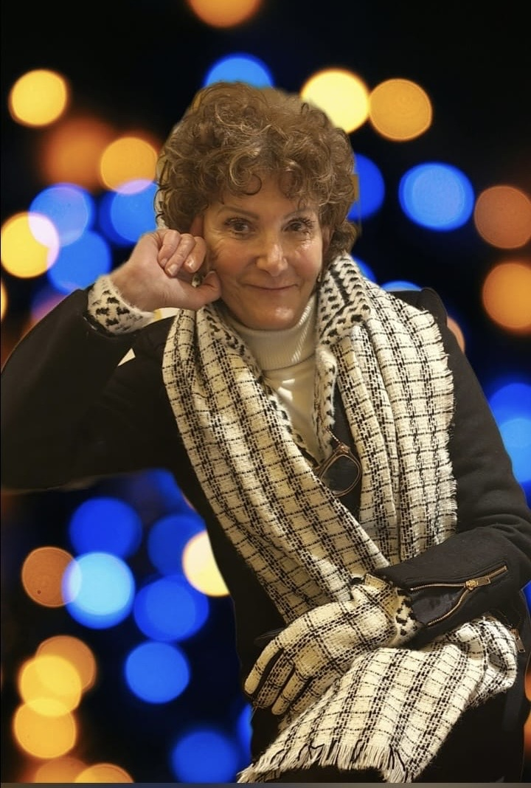
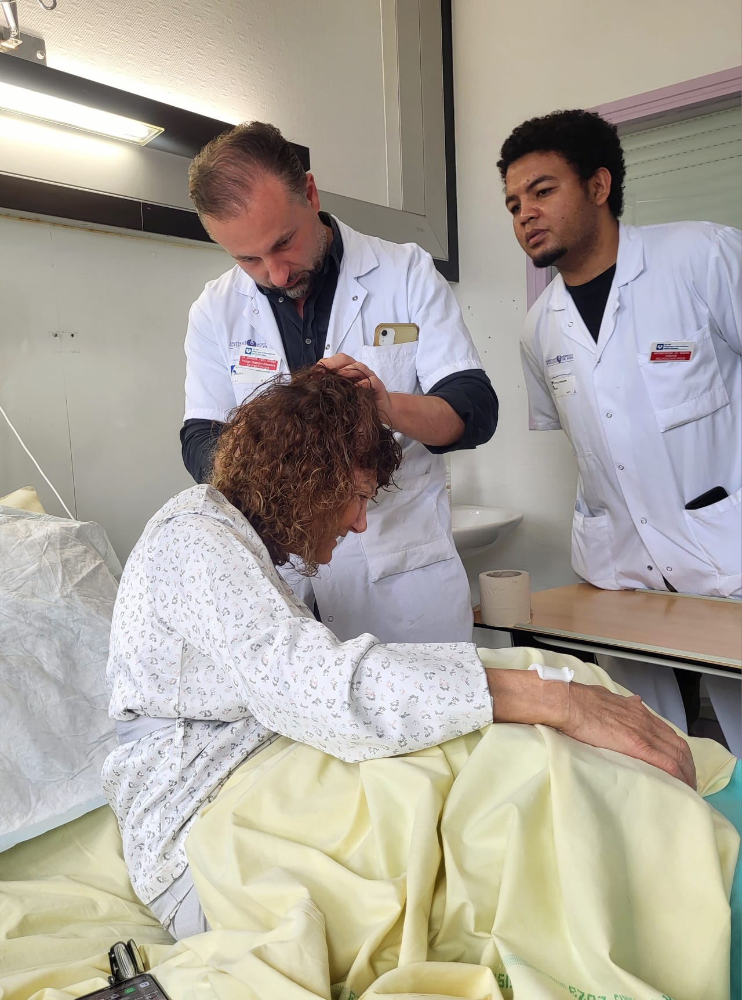
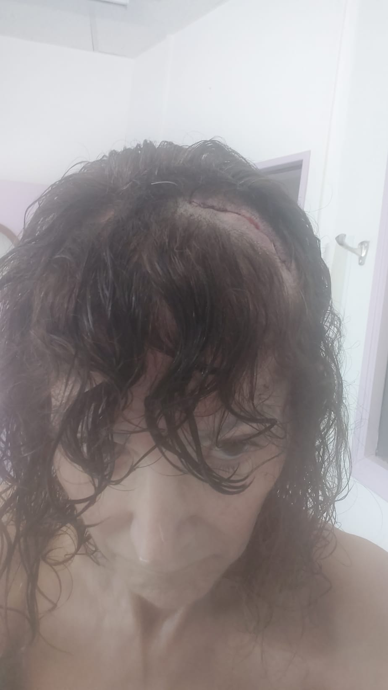

Présentation
Préface
Dans l'automne d'une vie, lorsque les années se tissent en une tapisserie d'expériences où chaque fil narre une lutte, une victoire ou une perte, une personne de plus de soixante-dix ans se tient à l'orée d'un monde en pleine métamorphose. Elle contemple une ère où l'intelligence artificielle (IA), telle une divinité contemporaine, façonne des horizons jadis inconcevables. Vivre avec son temps, pour ces âmes riches d'histoire, n'est pas une simple nécessité, mais une exhortation à danser avec l'inconnu, à embrasser les prodiges d'une époque où la science redéfinit les contours de l'humain.
Le domaine médical, porté par les ailes de l'IA, s'est mué en un sanctuaire d'espoir où les frontières du possible s'élargissent sans cesse. Les algorithmes, tels des oracles modernes, scrutent des constellations de données cliniques, prédisant l'évolution des pathologies avec une précision qui confine à la prescience. Dans le champ de la neurologie, et particulièrement dans la lutte contre la maladie de Parkinson, les avancées techniques s'apparentent à des miracles forgés par la raison.
Les implants cérébraux, ces dispositifs d'une sophistication extrême, incarnent une révolution silencieuse. La stimulation cérébrale profonde (DBS), pilier de la prise en charge du Parkinson, a atteint des sommets d'élégance technologique. Les électrodes, d'une finesse presque poétique, sont désormais implantées avec une précision guidée par des modèles d'IA qui cartographient les réseaux neuronaux en trois dimensions. Ces systèmes, ajustés en temps réel par des algorithmes adaptatifs, dialoguent avec les neurones, apaisant les tremblements, restaurant l'équilibre, et rendant à l'âme sa maîtrise sur le corps.
Au-delà de la prouesse technique, ces avancées incarnent l'esprit d'une époque : une époque où l'âge n'est plus un refuge dans le passé, mais un tremplin vers l'avenir. C'est dans cet esprit que s'ouvre l'histoire de Roselyne Pipernos, une femme dont le courage et la ténacité illuminent les pages qui suivent.
Témoignage
L'Histoire de Roselyne
Je m'appelle Roselyne Pipernos, et à 73 ans, j'ai traversé des vallées obscures où le corps trahit l'âme, où la volonté chancelle face à une maladie implacable. En 2019, dans une salle austère d'un hôpital parisien, le diagnostic est tombé : Parkinson. Ce mot, lourd comme une sentence, planait déjà dans mon esprit. Depuis vingt ans, un neurologue attentif m'accompagnait, scrutant les prémices de la maladie dans le frémissement discret de mes mains ou la raideur insidieuse de mes pas.
Pendant cinq ans, j'ai cherché un espoir dans ce brouillard. Puis, j'ai rencontré un neurochirurgien d'exception. Sa présence allait au-delà d'un simple échange médical : il semblait sonder mon âme pour y déceler une étincelle de courage. Après des mois de réflexion, j'ai pris une décision audacieuse : le 13 février 2024, je subirais une opération pour poser un stimulateur cérébral.
L'intervention fut un succès, mais la victoire fut de courte durée. Peu après, mes jambes se mirent à trembler avec une intensité nouvelle. Une chute brutale me précipita à l'hôpital : le stimulateur, délogé, menaçait ma santé. Le 21 mars 2024, une opération d'urgence fut nécessaire pour le retirer. Le 7 mai 2024, une troisième opération marqua un tournant décisif. À mon réveil, un silence étrange m'enveloppa : mes jambes ne tremblaient plus. Ce n'était pas seulement l'absence de symptômes, c'était une renaissance.
Encouragée, j'ai désactivé le stimulateur pendant dix jours, puis 35 jours. Aucun tremblement, aucune rechute. Mon neurochirurgien expliqua une hypothèse fascinante : ce nouveau placement des électrodes semblait avoir réécrit les règles du jeu. Aujourd'hui, je marche, je vis, je respire. Le Parkinson, tapi dans l'ombre, n'a pas disparu, mais il ne régit plus mes jours.
Parcours en Image
Les Étapes du Parcours de Roselyne
Découvrez le parcours de Roselyne à travers quatre étapes marquantes.
1. Le Diagnostic
Vidéo 1: Les Premiers Signes
Tremblements visibles.
Vidéo 2: Consultations Initiales
Rencontres avec des neurologues et premières observations médicales.
2. Les Opérations
Première intervention février 2024
Après l'opération
Première opération
Pose du stimulateur cérébral.
3. La Rééducation
Vidéo 5: Balnéothérapie partie 1
Séances pour retrouver la fluidité des mouvements.
Vidéo 6: Balnéothérapie partie 2
Activités de danse et boxe pour renforcer le corps et l'esprit.
Vidéo 7: Balnéothérapie partie 3
Séances pour retrouver la fluidité des mouvements.
Vidéo 8: Boxe partie 1
Activités de boxe pour renforcer le corps et l'esprit.
Vidéo 9: Boxe partie 2
Séances pour retrouver la fluidité des mouvements.
Vidéo 10: Boxe partie 3
Activités de danse et boxe pour renforcer le corps et l'esprit.
4. Expérimentations sans stimulation cérébrale
Vidéo 7: Partie 1
Périodes sans activation et découverte d'une nouvelle liberté.
Vidéo : Partie 2
Roselyne célèbre sa résilience et sa maîtrise retrouvée.
Vidéo : Exercices
Séances pour retrouver la fluidité des mouvements.
Vidéo : Exercices
Activités de danse et boxe pour renforcer le corps et l'esprit.
Vidéo : Exercices
Séances pour retrouver la fluidité des mouvements.
Vidéo : Exercices
Activités de danse et boxe pour renforcer le corps et l'esprit.
Vidéo 5: Balnéothérapie
Séances pour retrouver la fluidité des mouvements.
Vidéo 6: Balnéothérapie
Activités de danse et boxe pour renforcer le corps et l'esprit.
Remerciements
Ce chemin, je ne l'ai pas parcouru seule. Une troupe précieuse m'a accompagnée : des kinésithérapeutes qui ont réappris à mes muscles la fluidité du mouvement, des professeurs de danse qui ont insufflé du rythme à mes pas, des entraîneurs de boxe qui m'ont enseigné à défier l'adversité. Ensemble, nous avons documenté cette aventure, à la fois scientifique et rebelle.
Ma gratitude va également à l'équipe médicale, dont le professionnalisme et la rigueur ont été salvateurs, et à mon neurochirurgien, dont l'écoute et la vision audacieuse ont changé le cours de ma vie. Mon histoire est un hymne à la ténacité, à l'écoute de soi, et à ces moments où l'humain, fragile et obstiné, défie l'inéluctable.
Pr. Stéphane Palfi neurochirurgien avec l'étui du stimulateur.